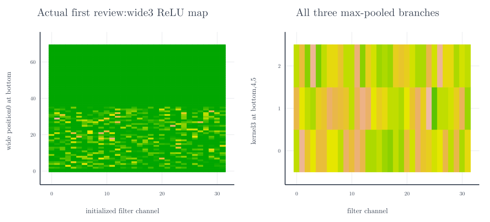
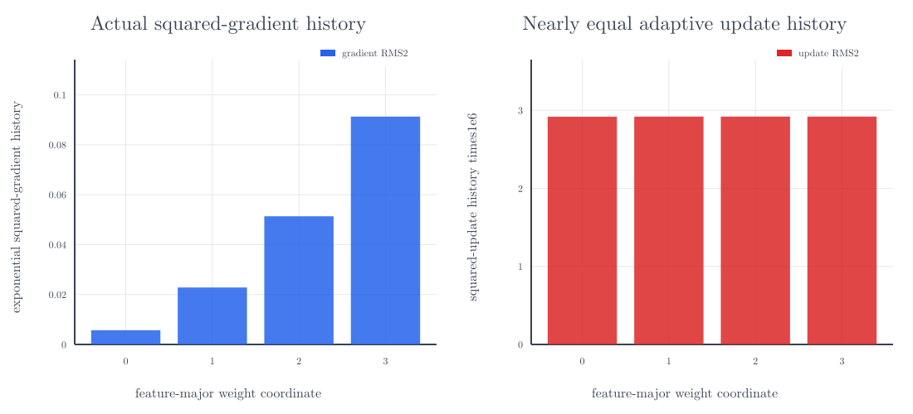
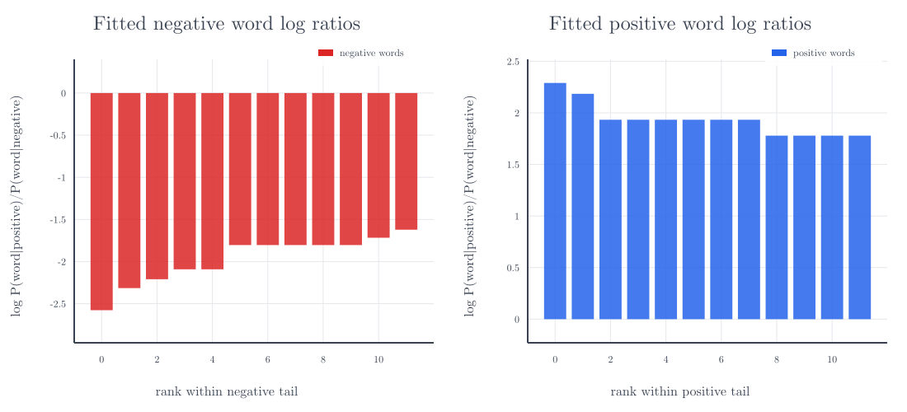
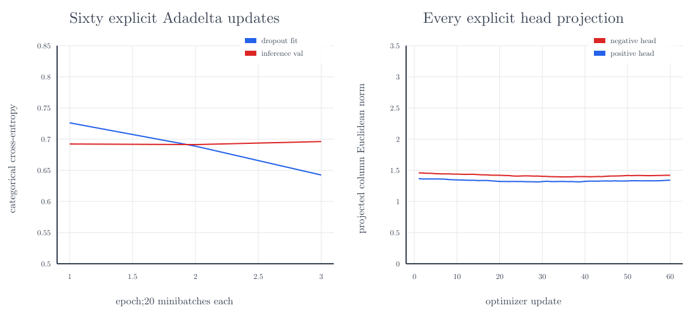
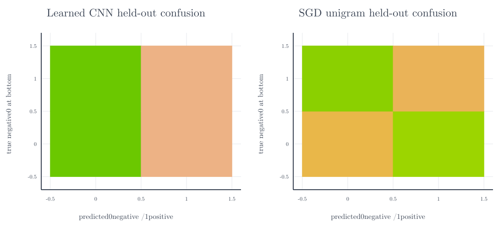
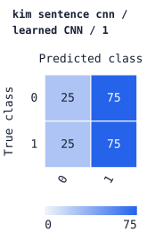

Word CNN:real reviews and visible tensor Adadelta
Abstract
Genuine Pang/Lee movie-review snippets feed a complete random-embedding wide3/4/5 CNN. Explicit tensor SGD count references,all60 standard Adadelta updates,separate head projections and original held-out text reveal both computation and limited sentiment results.
Source example: examples/cpp/source/nn/1_convolutional_neural_networks/1.9_1d_convolutions/kim_sentence_cnn.cpp.
The method
Fit token vocabulary only on retained original reviews,keep PAD0 structurally zero,and pool parallel wide word windows. Show the ordinary tensor optimizer and post-step maxnorm projection explicitly. Restore nine learned leaves for words-and-lengths-only inference,then compare every held-out prediction with the unchanged SGD unigram reference.
The concept diagram below is drawn by dm::graphics::Diagram. Its editable C++
source is the complete block below; regeneration uses the same datamunge toolchain
as the numerical examples. Exports consume the saved local SVG.
#include <dm/dm.hpp>
int main() {
std::filesystem::create_directories("build");
dm::graphics::Diagram diagram;
diagram.node("n0", {0.0, 0}, "Original movie\n review words");
diagram.node("n1", {5.2, 0}, "Wide3/4/5\n tensor features");
diagram.node("n2", {10.4, 0}, "Explicit updates\n and held-out text");
diagram.edge("n0", "n1").edge("n1", "n2");
diagram.save_svg("build/kim_sentence_cnn_concept.svg");
}Executed tensor architecture
The shape probe fixes token indices and lengths. Integer indexing and one-hot constants are outside the differentiable trace; the figure displays the learned embedding/convolution/classifier dependency path. The explicit token-inventory configuration above is not a fitted vocabulary.
This figure executes the inference configuration shown in the code, using a zero-valued shape probe without fitting or loading a checkpoint. Named stage boundaries group whole subgraphs where available; other nodes retain functional-layer detail. Exact batch-inclusive shapes and reachable parameter totals come from the trace. Shared linear scales map spatial dimensions and channel counts to blocks; the one-pixel visibility floor is disclosed in the legend. Labels use compact monospace text, rotate counterclockwise and sit beside their own glyphs. Arrows flow left to right; wide diagrams scroll at native size on the website.
#include <dm/dm.hpp>
int main() {
namespace n = dm::nn;
namespace m = n::models;
n::set_num_threads(2);
std::filesystem::create_directories("build");
n::ParameterStore p(317);
const m::KimConfig c{8000, 64, 32, 32};
n::Module architecture_model(
[&](const n::Tensor& image) {
return m::KimCnn(p, image.to(n::DType::Int32), n::ones({1}, n::DType::Int32), c).logits;
},
"Word CNN:real reviews and visible tensor Adadelta");
n::ModelPlotOptions options;
options.style = n::ModelPlotStyle::Flow;
options.detail = n::ModelPlotDetail::Blocks;
options.labels = {.type = n::ModelPlotLabel::NameAndShape, .size = 12, .wrap = 24};
options.spacing = {.layer = 24, .lane = 12, .label = 8, .margin = 20};
options.sizing.spatial_size = 96;
options.sizing.channel_size = 42;
options.sizing.minimum_extent = 1;
options.opacity = .8;
const auto diagram = architecture_model.plot(n::zeros({1, c.time}), options);
diagram.save_svg("build/kim_sentence_cnn_architecture.svg");
std::print(
"{} displayed nodes; {} reachable learned values.\n",
diagram.nodes().size(),
diagram.parameter_count());
}14 displayed nodes; 268546 reachable learned values.

Genuine movie-review words and a fitting-only vocabulary
Use the official Pang/Lee MR sentence-polarity v1.0 archive,487,770bytes, SHA256a05befe52aafda71d458d188a1c54506a998b1308613ba76bbda2e5029409ce9. There are5331 negative and5331 positive source snippets. ASCII lowercase word/digit/apostrophe tokenization retains the first64 tokens. Group identical truncated word sequences,exclude conflicting-label groups,then select balanced 500fit/100validation/100test per class with source std::mt19937seed337. Final pool order is shuffled:1000fit,200validation,200test. Original source line IDs remain disjoint. This is a custom holdout,not published cross-validation.
Only fitting words rank the vocabulary by frequency then lexical ties,max7998 plus PAD0/UNK1. The actual inventory has5161 classes;there are no pretrained embeddings. Unknown held-out words use1,right padding0. Both the token matrix and the original source text/labels remain in the manifest and reviews.tsv. Word and later raw-character examples share exactly these original source rows.
#include <dm/dm.hpp>
int main() {
const std::filesystem::path cache = dm::datasets::data_home();
dm::datasets::prepare_example_data("text", cache);
}All numerical counts use tensor segment reductions,avoiding a huge[N,T,V] onehot cube. The plots show every original sequence length and actual fitting word frequencies. String dictionaries/rank labels are presentation metadata.
#include <dm/dm.hpp>
int main() {
namespace n = dm::nn;
namespace m = n::models;
n::set_num_threads(2);
std::filesystem::path cache;
if (const auto *p = std::getenv("DATAMUNGE_DATA_DIR"))
cache = p;
else if (const auto *p = std::getenv("XDG_CACHE_HOME"))
cache = std::filesystem::path(p) / "datamunge/datasets";
else
cache = std::filesystem::path(std::getenv("HOME")) / ".cache/datamunge/datasets";
std::filesystem::path root = cache / "sentence";
if (const auto *p = std::getenv("DATAMUNGE_SENTENCE_DIR"))
root = p;
else {
dm::datasets::prepare_example_data("text", cache.string());
root = cache / "sentence";
}
const auto split = m::LoadSentences(root);
const auto &fit = split.pools[0];
const auto &validation = split.pools[1];
const auto &test = split.pools[2];
std::vector<std::string> words;
std::ifstream vocabulary(root / "vocabulary.txt");
std::string word;
while (std::getline(vocabulary, word))
words.push_back(word);
if (words.size() != std::size_t(split.config.vocabulary))
return 1;
auto a = dm::graphics::RPlot::create(), b = dm::graphics::RPlot::create();
const std::array<dm::graphics::RGB, 3> colors = {
{{37, 99, 235}, {220, 38, 38}, {22, 163, 74}}};
std::print("| split | source snippets | negative/positive | mean observed words | "
"unknown-word fraction |\n|---|---:|---|---:|---:|\n");
int index = 0;
for (const auto &item : std::vector<std::pair<std::string, m::SentenceData>>{
{"fitting", fit}, {"validation", validation}, {"test", test}}) {
const auto active = m::LengthMask(item.second.lengths, 64, n::DType::Bool);
const auto unknown =
n::sum(
n::logical_and(active, n::equal(item.second.tokens, 1.)).to(n::DType::Float64)) /
n::sum(active.to(n::DType::Float64));
const auto counts =
n::unsorted_segment_sum(n::ones({item.second.size()}, n::DType::Float64),
item.second.lengths.to(n::DType::Int64), 65);
a.lines(n::arange(0, 65).to_vector<double>(), counts.to_vector<double>(), item.first,
colors[index++]);
std::print("| {} | {} | {} | {:.6f} | {:.6f} |\n", item.first, item.second.size(),
n::sum(n::one_hot(item.second.labels, 2), {0}),
n::mean(item.second.lengths.to(n::DType::Float64)).item(), unknown.item());
}
a.title("Every original observed word length")
.x_label("retained word count,cap64")
.y_label("source snippets at that length");
const auto counts = n::sum(m::SentenceWordCounts(fit, split.config.vocabulary), {0});
const auto top = n::slice_axis(n::argsort(counts, true), 0, 0, 20);
const auto values = n::gather(counts, top, 0);
b.bars(n::arange(0, 20).to_vector<double>(), values.to_vector<double>(), "fitting words",
{147, 51, 234})
.title("Top20 actual fitting word counts")
.x_label("frequency rank (see table)")
.y_label("observed fitting occurrences");
std::print("\n| rank | fitting word | count |\n|---:|---|---:|\n");
const auto ids = top.to_vector<std::int64_t>();
const auto numeric = values.to_vector<std::int64_t>();
for (int i = 0; i < 20; ++i)
std::print("| {} | {} | {} |\n", i, words[ids[i]], numeric[i]);
auto layout = dm::graphics::RLayout::create(1, 2);
layout.add(a).add(b).size(1100, 500).fit_panels().save_svg(
"build/kim_sentence_cnn_data.svg");
}| split | source snippets | negative/positive | mean observed words | unknown-word fraction |
|---|---|---|---|---|
| fitting | 1000 | float32[2] [500, 500] | 19.081000 | 0.000000 |
| validation | 200 | float32[2] [100, 100] | 19.105000 | 0.189217 |
| test | 200 | float32[2] [100, 100] | 19.330000 | 0.197103 |
| rank | fitting word | count |
|---|---|---|
| 0 | the | 964 |
| 1 | a | 707 |
| 2 | and | 619 |
| 3 | of | 578 |
| 4 | to | 405 |
| 5 | is | 363 |
| 6 | it | 245 |
| 7 | in | 229 |
| 8 | that | 226 |
| 9 | as | 181 |
| 10 | with | 155 |
| 11 | but | 152 |
| 12 | for | 146 |
| 13 | this | 144 |
| 14 | an | 139 |
| 15 | film | 137 |
| 16 | its | 136 |
| 17 | movie | 130 |
| 18 | it's | 101 |
| 19 | all | 90 |

Structural PAD0 and wide3/4/5 convolution
Only rows1..V-1 of the embedding table learn;row0 is a structural zero. Observed lengths mask gathered embeddings before padding4 zeros on each side. Parallel VALID kernels3/4/5 produce lengthsT+6/T+5/T+4,then ReLU and maximum over all branch times. Wide boundary windows remain candidates and can carry learned bias;this is the source wide-convolution policy,not masked-window pooling. Concatenate the three pooled vectors,apply optional dropout,and use a linear binary head. Source initializers are U(-.25,.25) embeddings and Glorot-uniform convolution/head weights,with zero biases.
The following actual fitting observations show initialized features,not interpretations of a trained predictor. Replacing legal token IDs beyond observed length has exact zero effect. PAD0's full-table input adjoint is0.
#include <dm/dm.hpp>
int main() {
namespace n = dm::nn;
namespace m = n::models;
n::set_num_threads(2);
std::filesystem::path cache;
if (const auto *p = std::getenv("DATAMUNGE_DATA_DIR"))
cache = p;
else if (const auto *p = std::getenv("XDG_CACHE_HOME"))
cache = std::filesystem::path(p) / "datamunge/datasets";
else
cache = std::filesystem::path(std::getenv("HOME")) / ".cache/datamunge/datasets";
std::filesystem::path root = cache / "sentence";
if (const auto *p = std::getenv("DATAMUNGE_SENTENCE_DIR"))
root = p;
else {
dm::datasets::prepare_example_data("text", cache.string());
root = cache / "sentence";
}
const auto split = m::LoadSentences(root);
const auto &fit = split.pools[0];
const auto &validation = split.pools[1];
const auto &test = split.pools[2];
const auto d = m::SentenceRows(fit, {0, 1});
n::ParameterStore p(317);
const auto out = m::KimCnn(p, d.tokens, d.lengths, split.config);
const auto gradient = n::grad(n::sum(n::square(out.logits)), {out.embedding})[0];
n::NoGradGuard guard;
const auto active = m::LengthMask(d.lengths, 64, n::DType::Bool);
const auto changed = n::where(active, d.tokens, 1.);
const auto parity =
n::max(n::abs(m::KimCnn(p, changed, d.lengths, split.config).logits - out.logits));
std::print("Wide branch lengths {}/{}/{};{} pooled channels;structural PAD0 norm {:.3g},PAD "
"adjoint {:.3g},padding-substitution parity {:.3g}.\n",
out.maps[0].size(1), out.maps[1].size(1), out.maps[2].size(1),
out.features.size(1), n::max(n::abs(n::select(out.embedding, 0, 0))).item(),
n::max(n::abs(n::select(gradient, 0, 0))).item(), parity.item());
auto a = n::plot_tensor_map(n::reverse(n::select(out.maps[0], 0, 0), {0}), 0,
n::max(out.maps[0]).item()),
b = n::plot_tensor_map(n::reverse(n::select(out.features, 0, 0).reshape({3, 32}), {0}),
0, n::max(out.features).item());
a.title("Actual first review:wide3 ReLU map")
.x_label("initialized filter channel")
.y_label("wide position0 at bottom");
b.title("All three max-pooled branches")
.x_label("filter channel")
.y_label("kernel3 at bottom,4,5");
auto layout = dm::graphics::RLayout::create(1, 2);
layout.add(a).add(b).size(1100, 500).fit_panels().save_svg(
"build/kim_sentence_cnn_features.svg");
}Wide branch lengths 70/69/68;96 pooled channels;structural PAD0 norm 0,PAD adjoint 0,padding-substitution parity 0.

Adadelta and the head constraint stay explicit
Use the library tensor optimizer,OptimizerKind::Adadelta,learning-rate multiplier1, rho.95,epsilon1e-6 and zero history. After each update,project only the head kernel's columns to norm<=3 under NoGradGuard. Biases,embeddings and word filters are not projected. The ordinary optimizer captures warmed learned leaves; its history remains internal and inspectable through state(). A legacy naming adapter delegates to this same optimizer and preserves the old slot fixture API.
The declared signed-gradient fixture exposes both RMS histories and the head projection. Native checks compare all three steps,every state coordinate and both head column norms against an independent literal Adadelta oracle.
#include <dm/dm.hpp>
int main() {
namespace n = dm::nn;
namespace m = n::models;
n::ParameterStore p(347);
auto w = p.get("classifier/W", {2, 2}, n::init::zeros());
{
n::NoGradGuard guard;
w.copy_(n::tensor({3., .1, 4., .2}, {2, 2}));
}
n::OptimizerConfig options;
options.kind = n::OptimizerKind::Adadelta;
options.rho = .95;
options.epsilon = 1e-6;
n::Optimizer adadelta(p, 1., options);
std::vector<n::Tensor> norms;
std::print("| step | pre-projection column norms | post-projection column norms "
"|\n|---:|---|---|\n");
for (int step = 0; step < 3; ++step) {
const auto gradient = (n::arange(1, 5) * .2 * (step == 1 ? -1. : 1.)).reshape({2, 2});
adadelta.step({gradient});
n::NoGradGuard guard;
const auto before = n::sqrt(n::sum(n::square(w), {0}));
w.copy_(m::KimMaxNorm(w));
const auto after = n::sqrt(n::sum(n::square(w), {0}));
norms.push_back(n::stack({before, after}, 0));
std::print("| {} | {} | {} |\n", step + 1, before, after);
}
n::Tensor gradient_history, update_history;
for (const auto &[name, value] : adadelta.state()) {
if (name == "accum/0")
gradient_history = value;
else if (name == "accum_update/0")
update_history = value;
}
const auto gh = gradient_history.reshape({4}), uh = update_history.reshape({4}) * 1e6;
std::print("Gradient history {},update history {} (unscaled values).\n", gradient_history,
update_history);
auto a = dm::graphics::RPlot::create(), b = dm::graphics::RPlot::create();
const auto coordinates = n::arange(0, 4).to_vector<double>();
a.bars(coordinates, gh.to_vector<double>(), "gradient RMS2", {37, 99, 235})
.title("Actual squared-gradient history")
.x_label("feature-major weight coordinate")
.y_label("exponential squared-gradient history")
.y_limits(0, (n::max(gh) * 1.25).item());
b.bars(coordinates, uh.to_vector<double>(), "update RMS2", {220, 38, 38})
.title("Nearly equal adaptive update history")
.x_label("feature-major weight coordinate")
.y_label("squared-update history times1e6")
.y_limits(0, (n::max(uh) * 1.25).item());
auto layout = dm::graphics::RLayout::create(1, 2);
layout.add(a).add(b).size(1100, 500).fit_panels().save_svg(
"build/kim_sentence_cnn_adadelta.svg");
}| step | pre-projection column norms | post-projection column norms |
|---|---|---|
| 1 | float32[2] [4.99374, 0.217616] | float32[2] [3, 0.217616] |
| 2 | float32[2] [3.00634, 0.223683] | float32[2] [3, 0.223683] |
| 3 | float32[2] [2.99361, 0.217565] | float32[2] [2.99361, 0.217565] |
Gradient history float32[2, 2] [[0.005705, 0.02282], [0.051345, 0.09128]],update history float32[2, 2] [[2.91855e-06, 2.91966e-06], [2.91986e-06, 2.91994e-06]] (unscaled values).

Full and compact CNN-rand keep all word windows
The original full metadata usesV8000,T64,E300,F100. The actual compact fit usesV5161,E32,F32. Both retain9 learned leaves and parallel3/4/5 branches. The full graph executes every learned derivative in the native suite;all80 tiny-model parameter coordinates also match independent host finite differences. No pretrained embeddings or paper cross-validation accuracy are implied.
For the unigram reference,fit2*V token-count fields and2 class-count fields with one explicit Double SGD(.5) step on summed squared count error. Targets are add-one fitting class-token/class-frequency counts. Normalize and score those learned fields;the closed-form tensor NB helper is only a parity oracle. The count objective is declared separately from the neural CE objective.
#include <dm/dm.hpp>
int main() {
namespace n = dm::nn;
namespace m = n::models;
n::set_num_threads(2);
std::filesystem::path cache;
if (const auto *p = std::getenv("DATAMUNGE_DATA_DIR"))
cache = p;
else if (const auto *p = std::getenv("XDG_CACHE_HOME"))
cache = std::filesystem::path(p) / "datamunge/datasets";
else
cache = std::filesystem::path(std::getenv("HOME")) / ".cache/datamunge/datasets";
std::filesystem::path root = cache / "sentence";
if (const auto *p = std::getenv("DATAMUNGE_SENTENCE_DIR"))
root = p;
else {
dm::datasets::prepare_example_data("text", cache.string());
root = cache / "sentence";
}
const auto split = m::LoadSentences(root);
const auto &fit = split.pools[0];
const auto &validation = split.pools[1];
const auto &test = split.pools[2];
std::print("| graph | vocabulary | embedding | filters/branch | learned values | leaves | "
"maps | pooled |\n|---|---:|---:|---:|---:|---:|---|---|\n");
for (bool compact : {false, true}) {
const auto c = compact ? split.config : m::KimConfig{};
n::ParameterStore p(317);
n::NoGradGuard guard;
const auto out =
m::KimCnn(p, n::ones({2, 64}, n::DType::Int32), n::full({2}, 3., n::DType::Int32), c);
std::print("| {} | {} | {} | {} | {} | {} | {}/{}/{} | {} |\n",
compact ? "actual compact" : "full", c.vocabulary, c.embedding, c.filters,
p.count(), p.size(), out.maps[0].shape(), out.maps[1].shape(),
out.maps[2].shape(), out.features.shape());
}
const int v = split.config.vocabulary;
const auto x = m::SentenceWordCounts(fit, v);
const auto y = m::SentenceWordCounts(test, v);
const auto labels = n::one_hot(fit.labels, 2, 1., 0., n::DType::Float64);
const auto target = n::matmul(n::transpose(labels, {1, 0}), x) + 1.;
const auto prior_target = n::sum(labels, {0}) + 1.;
n::ParameterStore counts(331, n::DType::Float64);
const auto words = counts.get("word_counts", {2, v}, n::init::zeros());
const auto classes = counts.get("class_counts", {2}, n::init::zeros());
n::OptimizerConfig options;
options.kind = n::OptimizerKind::Sgd;
n::Optimizer sgd(counts, .5, options);
sgd.minimize(n::sum(n::square(words - target)) + n::sum(n::square(classes - prior_target)));
const auto log_words = n::log(words / n::sum(words, {1}, true));
const auto log_prior = n::log(classes / n::sum(classes));
const auto logits =
(n::matmul(y, n::transpose(log_words, {1, 0})) + log_prior).to(n::DType::Float32);
const auto parity = n::max(n::abs(logits - m::SentenceNB(fit, test, v)));
if (parity.item() != 0)
return 1;
std::filesystem::create_directories("build");
n::save_npz("build/kim_sentence_cnn_sgd_nb.npz",
{{"word_counts", words.detach()}, {"class_counts", classes.detach()}});
std::print(
"One explicit SGD(.5) step fits{} count values;every held-out NB score parity {:.3g}.\n",
counts.count(), parity.item());
const auto relative = n::select(log_words, 0, 1) - n::select(log_words, 0, 0);
const auto ordered = n::argsort(relative, true);
const auto positive = n::slice_axis(ordered, 0, 0, 12);
const auto negative = n::slice_axis(n::argsort(relative), 0, 0, 12);
std::vector<std::string> vocabulary_words;
std::ifstream vocabulary_file(root / "vocabulary.txt");
std::string term;
while (std::getline(vocabulary_file, term))
vocabulary_words.push_back(term);
const auto negative_ids = negative.to_vector<std::int64_t>(),
positive_ids = positive.to_vector<std::int64_t>();
const auto negative_values = n::gather(relative, negative, 0).to_vector<double>(),
positive_values = n::gather(relative, positive, 0).to_vector<double>();
std::print("\n| tail rank | negative word | fitted log ratio | positive word | fitted log "
"ratio |\n|---:|---|---:|---|---:|\n");
for (int i = 0; i < 12; ++i)
std::print("| {} | {} | {:.6f} | {} | {:.6f} |\n", i, vocabulary_words[negative_ids[i]],
negative_values[i], vocabulary_words[positive_ids[i]], positive_values[i]);
auto a = dm::graphics::RPlot::create(), b = dm::graphics::RPlot::create();
a.bars(n::arange(0, 12).to_vector<double>(),
n::gather(relative, negative, 0).to_vector<double>(), "negative words", {220, 38, 38})
.title("Fitted negative word log ratios")
.x_label("rank within negative tail")
.y_label("log P(word|positive)/P(word|negative)")
.y_limits((n::min(n::gather(relative, negative, 0)) * 1.15).item(), .4);
b.bars(n::arange(0, 12).to_vector<double>(),
n::gather(relative, positive, 0).to_vector<double>(), "positive words", {37, 99, 235})
.title("Fitted positive word log ratios")
.x_label("rank within positive tail")
.y_label("log P(word|positive)/P(word|negative)");
auto layout = dm::graphics::RLayout::create(1, 2);
layout.add(a).add(b).size(1100, 500).fit_panels().save_svg(
"build/kim_sentence_cnn_reference.svg");
}| graph | vocabulary | embedding | filters/branch | learned values | leaves | maps | pooled |
|---|---|---|---|---|---|---|---|
| full | 8000 | 300 | 100 | 2760602 | 9 | [2, 70, 100]/[2, 69, 100]/[2, 68, 100] | [2, 300] |
| actual compact | 5161 | 32 | 32 | 177698 | 9 | [2, 70, 32]/[2, 69, 32]/[2, 68, 32] | [2, 96] |
One explicit SGD(.5) step fits10324 count values;every held-out NB score parity 0.
| tail rank | negative word | fitted log ratio | positive word | fitted log ratio |
|---|---|---|---|---|
| 0 | dull | -2.577533 | intelligent | 2.290001 |
| 1 | say | -2.315169 | fascinating | 2.184641 |
| 2 | worst | -2.209808 | brilliant | 1.933326 |
| 3 | boring | -2.092025 | coming | 1.933326 |
| 4 | tell | -2.092025 | everyone | 1.933326 |
| 5 | career | -1.804343 | horror | 1.933326 |
| 6 | exercise | -1.804343 | part | 1.933326 |
| 7 | formulaic | -1.804343 | take | 1.933326 |
| 8 | jokes | -1.804343 | absorbing | 1.779176 |
| 9 | needs | -1.804343 | achieves | 1.779176 |
| 10 | bad | -1.717332 | acted | 1.779176 |
| 11 | amy's | -1.622022 | against | 1.779176 |

All60 Adadelta updates and every head projection are visible
Warm all9 learned leaves before constructing the tensor Adadelta optimizer. Initialize317,dropout generator313,batch-order331. An explicit50-review dropout derivative probe checks all9 leaves before training and advances that same generator,matching the source. Every batch of50 fitting reviews uses keep.5 dropout,stable categorical CE,grad,Adadelta step and a separate head-column projection. Three epochs use all1000 fitting reviews once each: 60 updates. There is no BN or learned input normalization.
Validation dropout-free CE selects the learned checkpoint. Save the selected and untrained held-out logits for the independent observed-input restore test. Only the nine learned tensors are needed for deployment;no optimizer histories, labels or dropout generator enter inference.
#include <dm/dm.hpp>
int main() {
namespace n = dm::nn;
namespace m = n::models;
n::set_num_threads(2);
std::filesystem::path cache;
if (const auto *p = std::getenv("DATAMUNGE_DATA_DIR"))
cache = p;
else if (const auto *p = std::getenv("XDG_CACHE_HOME"))
cache = std::filesystem::path(p) / "datamunge/datasets";
else
cache = std::filesystem::path(std::getenv("HOME")) / ".cache/datamunge/datasets";
std::filesystem::path root = cache / "sentence";
if (const auto *p = std::getenv("DATAMUNGE_SENTENCE_DIR"))
root = p;
else {
dm::datasets::prepare_example_data("text", cache.string());
root = cache / "sentence";
}
const auto split = m::LoadSentences(root);
const auto &fit = split.pools[0];
const auto &validation = split.pools[1];
const auto &test = split.pools[2];
const auto c = split.config;
n::ParameterStore p(317);
n::Generator dropout(313);
{
n::NoGradGuard guard;
m::KimCnn(p, n::zeros({1, c.time}, n::DType::Int32), n::ones({1}, n::DType::Int32), c);
}
auto infer = [&](const m::SentenceData &d) {
n::NoGradGuard guard;
std::vector<n::Tensor> parts;
for (std::int64_t start = 0; start < d.size(); start += 50) {
std::vector<std::int64_t> rows;
for (auto i = start; i < std::min<std::int64_t>(start + 50, d.size()); ++i)
rows.push_back(i);
const auto b = m::SentenceRows(d, rows);
parts.push_back(m::KimCnn(p, b.tokens, b.lengths, c).logits);
}
return n::concat(parts, 0);
};
std::vector<std::int64_t> first50;
for (int i = 0; i < 50; ++i)
first50.push_back(i);
const auto probe = m::SentenceRows(fit, first50);
const double initial = m::SequenceCrossEntropy(infer(probe), probe.labels).item();
const auto untrained = infer(test);
const auto checked = m::KimCnn(p, probe.tokens, probe.lengths, c, true, .5, &dropout);
const auto probe_gradients =
n::grad(m::SequenceCrossEntropy(checked.logits, probe.labels), p.parameters());
for (const auto &g : probe_gradients)
if (!n::all(n::is_finite(g)).item<bool>() || n::sum(n::square(g)).item() <= 0)
return 1;
n::OptimizerConfig options;
options.kind = n::OptimizerKind::Adadelta;
options.rho = .95;
options.epsilon = 1e-6;
n::Optimizer adadelta(p, 1., options);
n::BatchOrder order(fit.size(), 50, 331);
std::vector<n::Tensor> history, head_norms;
double best = INFINITY;
int selected = 0, updates = 0;
std::print("| epoch | dropout fitting CE | validation CE | maximum projected head norm "
"|\n|---:|---:|---:|---:|\n");
for (int epoch = 1; epoch <= 3; ++epoch) {
order.begin_epoch();
auto average = n::zeros({}, n::DType::Float64);
for (;;) {
const auto rows = order.next();
if (rows.empty())
break;
const auto batch = m::SentenceRows(fit, rows);
const auto out = m::KimCnn(p, batch.tokens, batch.lengths, c, true, .5, &dropout);
const auto loss = m::SequenceCrossEntropy(out.logits, batch.labels);
average = average +
loss.detach().to(n::DType::Float64) * double(rows.size()) / double(fit.size());
adadelta.step(n::grad(loss, p.parameters()));
{
n::NoGradGuard guard;
auto head = p.at("classifier/W");
head.copy_(m::KimMaxNorm(head));
head_norms.push_back(n::sqrt(n::sum(n::square(head), {0})).detach());
}
++updates;
}
const auto val = m::SequenceCrossEntropy(infer(validation), validation.labels);
if (val.item() < best) {
best = val.item();
selected = epoch;
n::NamedTensors arrays;
for (std::size_t i = 0; i < p.size(); ++i)
arrays.push_back({p.names()[i], p.parameters()[i]});
n::save_npz("build/kim_sentence_cnn_best.npz", arrays);
}
history.push_back(n::stack({average, val.to(n::DType::Float64)}, 0));
std::print("| {} | {:.6f} | {:.6f} | {:.6f} |\n", epoch, average.item(), val.item(),
n::max(head_norms.back()).item());
}
for (const auto &[name, value] : n::load_npz("build/kim_sentence_cnn_best.npz"))
p.set(name, value);
const auto fitted = m::SequenceCrossEntropy(infer(probe), probe.labels);
const auto logits = infer(test);
n::save_npz("build/kim_sentence_cnn_outputs.npz",
{{"logits", logits}, {"untrained", untrained}});
int slots = 0;
for (const auto &[name, value] : adadelta.state())
slots += name.starts_with("accum/") || name.starts_with("accum_update/");
std::print("{} explicit Adadelta+projection updates;{} actual RMS-history arrays;selected "
"epoch {},validation {:.6f};fixed inference probe {:.6f}->{:.6f}.\n",
updates, slots, selected, best, initial, fitted.item());
const auto hist = n::stack(history, 0);
const auto norms = n::stack(head_norms, 0);
auto a = dm::graphics::RPlot::create(), b = dm::graphics::RPlot::create();
const auto epochs = n::arange(1, 4).to_vector<double>();
a.lines(epochs, n::select(hist, 1, 0).to_vector<double>(), "dropout fit", {37, 99, 235})
.lines(epochs, n::select(hist, 1, 1).to_vector<double>(), "inference val", {220, 38, 38})
.title("Sixty explicit Adadelta updates")
.x_label("epoch;20 minibatches each")
.y_label("categorical cross-entropy")
.y_limits(.5, .85);
const auto steps = n::arange(1, updates + 1).to_vector<double>();
b.lines(steps, n::select(norms, 1, 0).to_vector<double>(), "negative head", {220, 38, 38})
.lines(steps, n::select(norms, 1, 1).to_vector<double>(), "positive head", {37, 99, 235})
.title("Every explicit head projection")
.x_label("optimizer update")
.y_label("projected column Euclidean norm")
.y_limits(0, 3.5);
auto layout = dm::graphics::RLayout::create(1, 2);
layout.add(a).add(b).size(1100, 500).fit_panels().save_svg(
"build/kim_sentence_cnn_training.svg");
}| epoch | dropout fitting CE | validation CE | maximum projected head norm |
|---|---|---|---|
| 1 | 0.726080 | 0.692170 | 1.419861 |
| 2 | 0.688688 | 0.691233 | 1.398599 |
| 3 | 0.642366 | 0.696105 | 1.419277 |
60 explicit Adadelta+projection updates;18 actual RMS-history arrays;selected epoch 2,validation 0.691233;fixed inference probe 0.806359->0.613217.

Restore words and lengths only,and show actual held-out text
Restore a fresh9-leaf store without an optimizer. Only observed token IDs, lengths and architecture enter prediction. Check exact saved/repeated logits, single/batch agreement,nine leaves unchanged and head column norms<=3. Changing legal token content beyond observed lengths has0effect. Replacing observed words with UNK1 changes logits;this shows computation sensitivity, not trustworthy sentiment reasoning or feature importance.
The saved SGD reference counts never change during evaluation. Compare learned,untrained,SGD unigram and the declared balanced class0 tie reference. Every held-out label/prediction/confusion count uses tensor metrics. Display six original held-out text excerpts with true/predicted sentiment. String escaping is presentation only;the model still receives original prepared IDs.
#include <dm/dm.hpp>
int main() {
namespace n = dm::nn;
namespace m = n::models;
n::set_num_threads(2);
std::filesystem::path cache;
if (const auto *p = std::getenv("DATAMUNGE_DATA_DIR"))
cache = p;
else if (const auto *p = std::getenv("XDG_CACHE_HOME"))
cache = std::filesystem::path(p) / "datamunge/datasets";
else
cache = std::filesystem::path(std::getenv("HOME")) / ".cache/datamunge/datasets";
std::filesystem::path root = cache / "sentence";
if (const auto *p = std::getenv("DATAMUNGE_SENTENCE_DIR"))
root = p;
else {
dm::datasets::prepare_example_data("text", cache.string());
root = cache / "sentence";
}
const auto split = m::LoadSentences(root);
const auto &fit = split.pools[0];
const auto &validation = split.pools[1];
const auto &test = split.pools[2];
const auto c = split.config;
n::ParameterStore p(317);
{
n::NoGradGuard guard;
m::KimCnn(p, n::zeros({1, c.time}, n::DType::Int32), n::ones({1}, n::DType::Int32), c);
}
for (const auto &[name, value] : n::load_npz("build/kim_sentence_cnn_best.npz"))
p.set(name, value.clone());
std::vector<n::Tensor> before;
for (const auto &value : p.parameters())
before.push_back(value.clone());
auto infer = [&](const m::SentenceData &d) {
n::NoGradGuard guard;
std::vector<n::Tensor> parts;
for (std::int64_t start = 0; start < d.size(); start += 50) {
std::vector<std::int64_t> rows;
for (auto i = start; i < std::min<std::int64_t>(start + 50, d.size()); ++i)
rows.push_back(i);
const auto b = m::SentenceRows(d, rows);
parts.push_back(m::KimCnn(p, b.tokens, b.lengths, c).logits);
}
return n::concat(parts, 0);
};
n::Tensor saved, untrained;
for (const auto &[name, value] : n::load_npz("build/kim_sentence_cnn_outputs.npz")) {
if (name == "logits")
saved = value;
else
untrained = value;
}
const auto logits = infer(test);
const auto repeat = infer(test);
const auto parity =
n::maximum(n::max(n::abs(logits - saved)), n::max(n::abs(logits - repeat)));
const auto one = m::SentenceRows(test, {0});
const auto single = infer(one);
const auto batch_error = n::max(n::abs(single - n::slice_axis(logits, 0, 0, 1)));
const auto active = m::LengthMask(one.lengths, 64, n::DType::Bool);
auto padded = one;
padded.tokens = n::where(active, one.tokens, 1.);
auto unknown = one;
unknown.tokens = n::where(active, 1., one.tokens);
const auto pad_error = n::max(n::abs(infer(padded) - single));
const auto sensitivity =
n::sum(n::abs(infer(unknown).to(n::DType::Float64) - single.to(n::DType::Float64)));
bool immutable = true;
for (std::size_t i = 0; i < before.size(); ++i)
immutable = immutable && n::all(n::equal(before[i], p.parameters()[i])).item<bool>();
const auto head_norm = n::sqrt(n::sum(n::square(p.at("classifier/W").detach()), {0}));
if (parity.item() > 1e-6 || batch_error.item() > 1e-6 || pad_error.item() != 0 ||
sensitivity.item() <= 1e-6 || !immutable || n::max(head_norm).item() > 3.00001)
return 1;
std::print("Observed-word-only restore/repeat parity {:.3g};single/batch {:.9g} "
"within1e-6;out-of-length change {:.3g};nine learned leaves "
"immutable:{};observed UNK substitution change {:.6f};head norms {}.\n",
parity.item(), batch_error.item(), pad_error.item(), immutable,
sensitivity.item(), head_norm);
n::Tensor word_counts, class_counts;
for (const auto &[name, value] : n::load_npz("build/kim_sentence_cnn_sgd_nb.npz")) {
if (name == "word_counts")
word_counts = value;
else
class_counts = value;
}
n::NoGradGuard guard;
const auto nb =
(n::matmul(m::SentenceWordCounts(test, c.vocabulary),
n::transpose(n::log(word_counts / n::sum(word_counts, {1}, true)), {1, 0})) +
n::log(class_counts / n::sum(class_counts)))
.to(n::DType::Float32);
std::vector<n::Tensor> metrics, confusions;
std::print("\n| predictor | accuracy | stable NLL | all true-row confusion counts "
"|\n|---|---:|---:|---|\n");
{
n::ConfusionMatrix current_counts(logits.size(1));
current_counts.add(test.labels, n::argmax(logits, 1));
n::save_npz("build/kim_sentence_cnn_heldout_"+std::string("0")+".npz",{{"truth",test.labels},{"logits",logits},{"counts",current_counts.to_tensor()}});
}
for (const auto &item :
std::vector<std::pair<std::string, n::Tensor>>{{"learned CNN", logits},
{"untrained", untrained},
{"SGD unigram", nb},
{"class0 tie", n::zeros_like(logits)}}) {
const auto score = m::ScoreSequenceClassifier(item.second, test.labels);
metrics.push_back(n::stack({score.accuracy, score.nll}, 0));
confusions.push_back(score.confusion);
std::print("| {} | {:.6f} | {:.6f} | {} |\n", item.first, score.accuracy.item(),
score.nll.item(), score.confusion);
}
const auto predicted = n::argmax(logits, 1).to_vector<std::int64_t>();
const auto truth = test.labels.to_vector<int>();
const auto source_ids = test.source_ids.to_vector<int>();
std::map<int, std::string> text;
std::ifstream reviews(root / "reviews.tsv");
std::string line;
std::getline(reviews, line);
while (std::getline(reviews, line)) {
const auto a = line.find('\t'), b = line.find('\t', a + 1);
text.emplace(std::stoi(line.substr(0, a)), line.substr(b + 1));
}
auto escape = [](const std::string &input) {
std::string out;
for (char ch : input) {
if (ch == '&')
out += "&";
else if (ch == '<')
out += "<";
else if (ch == '>')
out += ">";
else if (ch == '|')
out += "|";
else
out += ch;
}
return out;
};
std::print("\n| original source ID | original text excerpt,first12 whitespace words | true "
"| CNN |\n|---:|---|---|---|\n");
for (int row = 0; row < 6; ++row) {
std::istringstream input(text.at(source_ids[row]));
std::string excerpt, word;
for (int i = 0; i < 12 && input >> word; ++i)
excerpt += (i ? " " : "") + word;
std::print("| {} | {} | {} | {} |\n", source_ids[row], escape(excerpt),
truth[row] ? "positive" : "negative", predicted[row] ? "positive" : "negative");
}
const auto measured = n::stack(metrics, 0);
const auto positions = n::arange(0, 4).to_vector<double>();
auto a = dm::graphics::RPlot::create(), b = dm::graphics::RPlot::create();
a.points(positions, n::select(measured, 1, 0).to_vector<double>(), "accuracy", {37, 99, 235})
.title("Original held-out review accuracy")
.x_label("0CNN /1initial /2SGD NB /3tie0")
.y_label("equal-review correct fraction")
.y_limits(0, 1.1);
b.points(positions, n::select(measured, 1, 1).to_vector<double>(), "stable NLL",
{220, 38, 38})
.title("All200 held-out review likelihoods")
.x_label("0CNN /1initial /2SGD NB /3tie0")
.y_label("mean categorical NLL")
.y_limits(0, 1.1);
auto summary = dm::graphics::RLayout::create(1, 2);
summary.add(a).add(b).size(1100, 500).fit_panels().save_svg(
"build/kim_sentence_cnn_metrics.svg");
std::filesystem::create_directories("figures");
std::filesystem::copy_file("build/kim_sentence_cnn_metrics.svg",
"figures/kim_sentence_cnn_metrics.svg",
std::filesystem::copy_options::overwrite_existing);
a = n::plot_tensor_map(n::reverse(confusions[0].to(n::DType::Float64), {0}), 0, 100);
b = n::plot_tensor_map(n::reverse(confusions[2].to(n::DType::Float64), {0}), 0, 100);
a.title("Learned CNN held-out confusion")
.x_label("predicted0negative /1positive")
.y_label("true negative0 at bottom");
b.title("SGD unigram held-out confusion")
.x_label("predicted0negative /1positive")
.y_label("true negative0 at bottom");
auto confusion = dm::graphics::RLayout::create(1, 2);
confusion.add(a).add(b).size(1100, 500).fit_panels().save_svg(
"build/kim_sentence_cnn_confusion.svg");
}Observed-word-only restore/repeat parity 0;single/batch 0 within1e-6;out-of-length change 0;nine learned leaves immutable:true;observed UNK substitution change 0.421097;head norms float32[2] [1.3986, 1.32187].
| predictor | accuracy | stable NLL | all true-row confusion counts |
|---|---|---|---|
| learned CNN | 0.500000 | 0.693469 | int64[2, 2] [[25, 75], [25, 75]] |
| untrained | 0.500000 | 0.756972 | int64[2, 2] [[100, 0], [100, 0]] |
| SGD unigram | 0.655000 | 0.843006 | int64[2, 2] [[65, 35], [34, 66]] |
| class0 tie | 0.500000 | 0.693147 | int64[2, 2] [[100, 0], [100, 0]] |
| original source ID | original text excerpt,first12 whitespace words | true | CNN |
|---|---|---|---|
| 831 | it's just too bad the screenwriters eventually shoot themselves in the feet | negative | positive |
| 4692 | the film's needlessly opaque intro takes its doe-eyed crudup out of pre-9/11 | negative | positive |
| 3446 | lazily directed by charles stone iii . . . from a leaden | negative | positive |
| 9973 | if the very concept makes you nervous . . . you'll have | positive | positive |
| 10582 | the script's snazzy dialogue establishes a realistic atmosphere that involves us in | positive | negative |
| 4669 | like mike is a slight and uninventive movie : like the exalted | negative | negative |


Selected epoch2 has validation CE.690920 and fixed fitting probe .806359->.623513. Held-out accuracy.565000 is below the SGD unigram reference.655000,although CNN NLL.685829 is lower than the unigram.843006. The learned confusion40/60/27/73 shows negative/positive recall.40/.73. The report therefore claims no sentiment-accuracy advantage or paper result.
Annotated confusion counts
The following program replots the current held-out evaluation counts printed in the
predictor tables above. It reproduces those recorded measurements without refitting
or re-evaluating the model. ConfusionMatrix::from_counts owns the integer tensor
counts and save_svg labels every cell. True class zero is the *top* row and
predicted class zero the left column. Counts are exact; colors use the observed
count range. Source class meanings remain those declared for the dataset above.
#include <dm/dm.hpp>
int main() {
namespace n = dm::nn;
std::filesystem::create_directories("build");
{
n::Tensor counts;
for (const auto &[key, value] : n::load_npz("build/kim_sentence_cnn_heldout_0.npz"))
if (key == "counts") counts = value;
const auto matrix = n::ConfusionMatrix::from_counts(counts);
matrix.save_svg(
"build/kim_sentence_cnn_confusion_api_0.svg",
{.title = "kim sentence cnn / learned CNN / 1", .cell_size = 52, .font_size = 13});
std::print("Current evaluation 1: 200 observations; accuracy {:.6f}.\n", matrix.accuracy());
}
}Current evaluation 1: 200 observations; accuracy 0.500000.

Verification and limits
Eight native tests check independent wide convolution/embedding values and all80tiny parameter finite differences,built-in Adadelta every history/weight coordinate plus head projection,dropout every value/shared-mask adjoint, extreme CE/all logit derivatives,full9-leaf backward,every original source word/length/label/ID and fitting-only ranked vocabulary,duplicate-word-group separation,every count/NB oracle score,visible SGD parity and padding controls. All public Doxygen examples compile/run,standalone headers and the original three-epoch workflow pass. Original data strings remain available for audit.
This small balanced MR holdout and CNN-rand fit do not reproduce a published cross-validation protocol or pretrained-embedding model. Sentence snippets are not independent movies/authors by construction. Initial/fitted maps, unknown substitutions and isolated head constraints establish implementation contracts;actual held-out sentiment errors determine the model comparison.
Regenerate adjacent views from this run
#include <dm/dm.hpp>
int main(){std::filesystem::copy_file("build/kim_sentence_cnn_metrics.svg","build/export_kim_sentence_cnn_metrics.svg",std::filesystem::copy_options::overwrite_existing);}Conclusion
The tensor optimizer and classifier constraint are visible in every update. Original snippets,complete held-out class counts and the fixed count reference constrain conclusions beyond lower fitting loss. These are custom CNN-rand teaching results,not published cross-validation accuracy.
References
- [Kim(2014),Convolutional Neural Networks for Sentence Classification](https://aclanthology.org/D14-1181/).
- [Zeiler(2012),ADADELTA:An Adaptive Learning Rate Method](https://arxiv.org/abs/1212.5701).
- [Official Pang/Lee MR sentence-polarity v1.0 data](https://www.cs.cornell.edu/people/pabo/movie-review-data/).